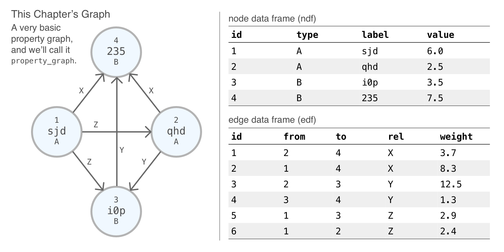

Chapter 4 Selections
Occasionally, you’ll want to operate on a select group of nodes or edges. Some functions affect a single node or edge while others (or, sometimes, the same functions) operate on all nodes or edges in a graph. Selections allow you to target specified nodes or edges and then apply specialized functions to operate on just those selected entities. Most of the selection functions support rudimentary set operations across several calls of the selection functions (i.e., for the union, intersection, or difference between selection sets of nodes or edges).
4.1 Setup for this Chapter
Ensure that the latest development build of DiagrammeR is installed. If the devtools package is not availble in your R library, install it and then use the install_github() function to get the latest DiagrammeR build.
install.packages("devtools")
devtools::install_github("rich-iannone/DiagrammeR")library(DiagrammeR)For this chapter, the graph property_graph has been created and it’s a simple property graph of 4 nodes and 6 edges. Numerical values are assigned to the nodes as the value attribute and to the edges as the weight attribute. Nodes have unique label values, and, type group labels are available for nodes (as A and B) and rel values are set for the edges (as X, Y, and Z). This schematic provides a visual representation of the graph as well as the attributes and data associated with each node and edge.

This graph adheres to the concept of a property graph as in that:
- all nodes have an assigned, non-
NAtypevalue - all edges have an assigned, non-
NArelvalue
We can always verify whether a graph satisfies these conditions with the is_property_graph() function, which either returns a TRUE or FALSE logical result.
is_property_graph(property_graph)## [1] TRUEWe’ll use this graph in most of the chapter examples to demonstrate how selections work. Working with a property graph in such examples is especially useful for showing how more complicated selections can be accomplished (i.e., using set operations and/or conditional statements).
4.2 The Selection Functions
The following table provides a summary of all the available select_...() functions available in DiagrammeR.
| Function | Description |
|---|---|
select_nodes() |
Select nodes graph using filtering conditions. |
select_nodes_by_id() |
Select nodes by their ID values. |
select_last_nodes_created() |
Select the last group of nodes created in the graph. |
select_nodes_by_degree() |
Select nodes on the basis of node degree. |
select_nodes_in_neighbourhood() |
Select nodes based on a walk distance from a specified node. |
select_edges() |
Select nodes graph using filtering conditions. |
select_edges_by_edge_id() |
Select edges by their ID values. |
select_edges_by_node_id() |
Select edges associated with specified node ID values. |
select_last_edges_created() |
Select the last group of edges created in the graph. |
select_rev_edges_ws() |
Select any reverse edges from a selection of edges. |
When any selection is performed using using a select_...() function, the selection is stored in the graph object. We can always use get_selection() to verify this:
# Select nodes `1` and `4` of
# `property_graph` and then return
# the node IDs for the selection
property_graph %>%
select_nodes(nodes = c(1, 4)) %>%
get_selection()## [1] 1 44.3 Creating a Node Selection
Let’s begin with an in-depth look on how to select graph nodes using the select_nodes() function. Selecting nodes in a graph with select_nodes() can be done in multiple ways:
- providing only a set of node ID values
- by providing one or more filtering statements to
conditions - doing both of the above, where each set of values/statements work toward filtering the nodes that will comprise the node selection
Here is an example of the first case, where you know which node ID values should make up the node selection:
# Create a 5-node graph and select
# nodes `1` and `3`; show
# the final node selection
create_graph() %>%
add_n_nodes(5) %>%
select_nodes(nodes = c(1, 3)) %>%
get_selection()## [1] 1 3The select_nodes_by_id() function serves as a plug-in replacement for select_nodes() when used exactly in this way. Its nodes argument simply takes a vector of node ID values.
# Create a 5-node graph and select
# nodes `1` and `3` using the
# `select_nodes_by_id()` function
create_graph() %>%
add_n_nodes(5) %>%
select_nodes_by_id(nodes = c(1, 3)) %>%
get_selection()## [1] 1 3If you don’t know the node ID values that should be part of a selection, and this is often the case in practice, you can use a vector of filtering statements as conditions. Some of these can be conditions = "type == 'z'" (selecting nodes where the type value is z), or conditions = "value > 3.0" (node selection where the value attribute is greater than 3.0), or, conditions = c("value < 2.0", "type %in% c('a', 'b', 'd')") (all nodes with value less than 2.0 and having a type value of a, b, or d).
# The `property_graph` is, indeed, a
# property graph; let's select all nodes
# of type `a`
property_graph %>%
select_nodes(
conditions = "type == 'A'") %>%
create_subgraph_ws() %>%
get_node_df()## id type label value
## 1 1 A sjd 6.0
## 2 2 A qhd 2.5# Now, get all nodes with a `value`
# greater than 4.0
property_graph %>%
select_nodes(
conditions = "value > 4.0") %>%
create_subgraph_ws() %>%
get_node_df()## id type label value
## 1 1 A sjd 6.0
## 2 4 B 235 7.5A vector of condition statements creates a set of AND conditions, so, all conditions need to be fulfilled in the selection of nodes. We can also specify conditions with a set of OR conditions
4.4 Consecutive Selections
The situation may arise when a more specialized match needs to be made (i.e., matching this but not that, or, matching two different types of things). This is where the set_op argument (short for set operation) becomes useful. Multiple function calls with the select_nodes_by_id() function, for instance, can modify the set of selected nodes depending on the option provided in the set_op argument. These set operations are:
union— creates a union of selected nodes in consecutive operations that create a selection of nodes (this is the default option)intersect— modifies the list of selected nodes such that only those nodes common to both consecutive node selection operations will retaineddifference— modifies the list of selected nodes such that the only nodes retained are those that are different in the second node selection operation compared to the first
These set operations behave in exactly the same way as the base R functions union(), intersect(), and setdiff(). Furthermore, most of the select_...() functions contain the set_op argument, so, they behave the same way with regard to modifying the node or edge selection in a series of consecutive selection operations.
For a graph with 5 nodes (with IDs 1 through 5), creating an initial selection of nodes with select_nodes() will result in the selection of all 10 nodes in the graph. A subsequent call of select_nodes_by_id() specifying nodes = c(1, 3, 5) and set_op = "difference" will result in a selection of nodes 2 and 4. We can verify the selection any time with the get_selection() function. Here is a the complete pipeline, starting with create_graph() and finishing with get_selection():
# Create a 5-node graph and use 2
# `select_...()` functions; show
# the final node selection
create_graph() %>%
add_n_nodes(5) %>%
select_nodes() %>%
select_nodes_by_id(
nodes = c(1, 3, 5),
set_op = "difference") %>%
get_selection()## [1] 2 4